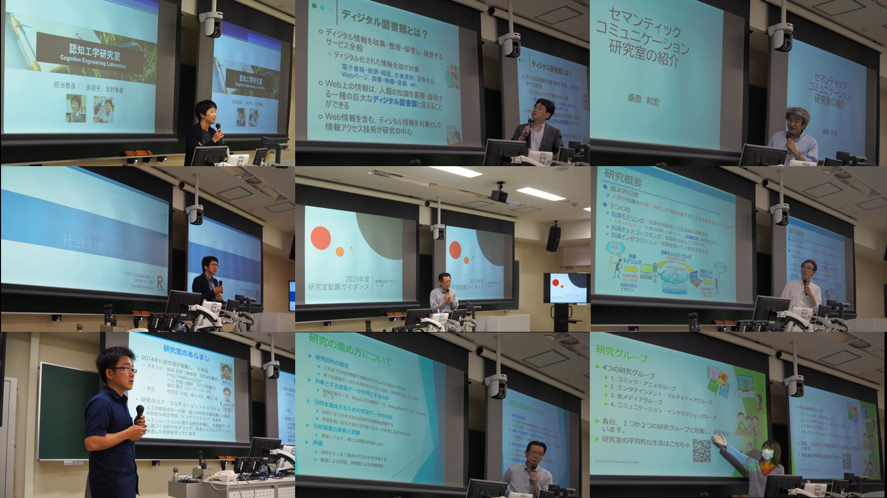
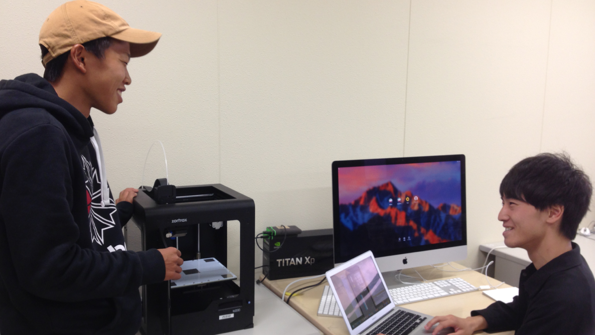
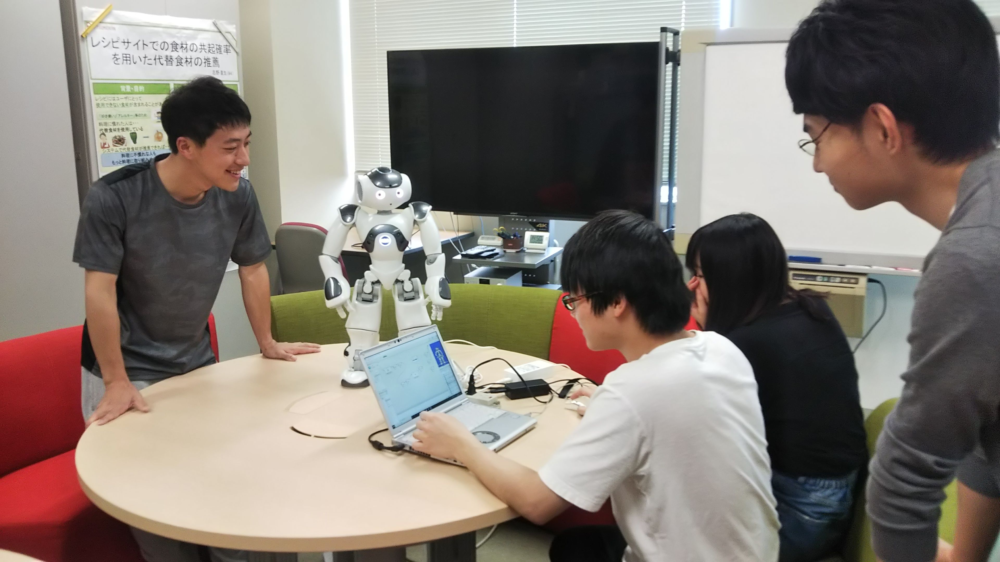

 
# 2020年度研究室配属情報
当コースでは，3回生の6月から研究室配属のためのイベントが始まります．7月中旬には所属研究室が決定し，3回生後期からは研究室内のゼミなどに参加することになります．
# 研究室配属説明会
2020年度の研究室配属についての説明会は次のように開催します．
# 日時・場所
- 日時: 2020年6月5日16:30-17:50，場所: Zoomによるオンライン開催(URLについては，manaba+Rを参照すること)
# 研究室配属ガイダンス資料
- 研究室配属全体説明資料(PDF) (opens new window)
- 社会知能研究室 (村上・PITUXCOOSUVARN研) (opens new window) ※要RainbowID
- 認知工学研究室 (泉研) (opens new window) ※要RainbowID
- ディジタル図書館研究室 (前田研) (opens new window) ※要RainbowID
- ナレッジコンピューティング研究室 (來村研) (opens new window) ※要RainbowID
- 対話デザイン研究室 (西原研) (opens new window) ※要RainbowID
- 自然言語処理研究室 (福本研) (opens new window) ※要RainbowID
- セマンティックコミュニケーション研究室 (桑原研) (opens new window) ※要RainbowID
- コラボレーションデザイン研究室 (服部・小川研) (opens new window) ※要RainbowID
# 研究室公開
研究室配属希望にあたり，各研究室について詳しく知る機会が設けられています．
# 期間
- 2020年6月8日(月)～6月17日(水)
研究室ごとの説明会日時は，各研究室で異なります．各研究室のHPや研究室配属説明会配布資料をチェックしてください．
# 配属希望調査
2020年度では，各研究室への配属希望調査が実施されます．
# 方法
希望調査はmanaba+R (opens new window)に掲載されているURL上で実施します． まず所属したい研究室の順番を決め，次にその1位から3位までの志望理由を記入することになっています．
# 期間
- 2020年6月18日(木曜)10:00～6月22日(月曜)13:00
- この期間外での希望は受け付けられませんので，ご注意ください
# 結果発表
研究室配属の結果は，2020年7月9日(木曜)13:00にmanaba+R (opens new window)で発表されます．
研究室配属が決定した学生には，各研究室からの連絡がRainbowメールに入る予定です．